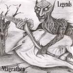

| Artist: | Magrathea |
| Title: | Legends |
| Label: | self produced |
| Length(s): | minutes |
| Year(s) of release: | 200? |
| Month of review: | [06/2005] |
| 1) | Reunion | 6.42 |
| 2) | Shadows Of Ignorance | 5.42 |
| 3) | Magical Box | 5.03 |
| 4) | The Man Who Loved Flowers | 7.18 |
| 5) | Galadriel | 6.19 |
| 6) | Brainwash | 6.11 |
| 7) | Birds Of Fire | 6.04 |
| 8) | Agoraphobic | 5.40 |
| 9) | Fear Of The Unknown | 5.02 |
| 10) | Dreamscape | 8.39 |
Shadows Of Ignorance also brings us back to the end of the eighties and the beginning of the nineties, this time with Collins like vocals and the style of the song in the vein of Trick Of The Tail and a bit of Duke. The chorus is rather catchy and lighthearted. Compositionally this is quite a bit less jumpy.
Magical Box (us turns to ag?) is a rather mellow affair, with the vocals sounding somewhat far off. This is a good composition though, a bit understated and in need of a fuller sound, but it all sounds natural. A very slow track, with some well developed vocal lines. There is a sense of tension here, albeit a light one.
The Man Who Loved Flowers brings a lot more tension in, with hacking drums, active choir like keyboards. The feel of Genesis pervades, but this time the melodies are not that great. Still, it does evoke the spirit so I expect plenty of proggers to be charmed. There is something of IQ in here as well, the darkness of this band. The lyrics and some of the vocals tend to remind me of Jon Anderson. Plenty of gloom in the middle part, claustrophobic even.
Galadriel brings us to the Lord Of The Rings. Time for a mellow track this time, but it does get to be much more. The song has little identity, and I have heard its type too often before. The melody is not particular enough, and the lyrics are a bit too romantic for my tastes. It all reminds me a bit of US.
Brainwash is next up, and yes, the Genesis influence is in evidence immediately. The keys sound a bit more eighties neo-prog style. The harmonies remind more of pomprock and Yes. The rather catchy and bouncy keyboards are a bit too much of a going back to the eighties, which was, all in all, a rather poor time for symphonic rock.
Birds Of Fire is really quite a strange tune. This is more like spacey pop music, with ethereal vocals, and a bit Frippian guitar (Discipline era), and a programmed, New Wavey beat. Again, something very much sounding as if recorded in the eighties. The vocal melody of the chorus has a certain appeal, it also makes me think I heard it before somewhere, but in that case sung in a more triumphant, louder way.
Agoraphobic opens with typical progrock riffs, plodding its way through the composition. I am not fond of the vocal part here. It is mainly used to spill lyrics over the listener, but there is hardly any melody. A weak track. Fear Of The Unknown is somewhat better, but suffers from a weak chorus, and a general lack of identity.
Dreamscape is the somewhat longer closer, in fact the longest track on the album. It opens with simple acoustic guitar, followed by mellow toned vocals. Do not use this type of voice too often, there should be constrast too (the alternative is coming up with really excellent vocal melodies). Before halfway we enter a plodding part, reminiscent of some of the Genesis tunes from Trick Of The Tail, while the hasty vocals remind more of Yes. Time for a bit of piano towards the end, followed by keyboards and some more active guitarwork.